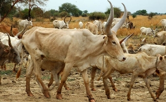

Par son climat tres proche du printemps europeen,Pita est nichee dans les hauteurs foutaniennes au milieu d'une vegetation abondante, mais aussi Les chutes Kinkon et Les chutes de Kambadaga probablement les plus belles du Fouta-Djallon augmente l'attrait touristique Elle offre aux visiteurs l'image d'un paradis touristique aux ressources variees insuffisamment exploitees.
